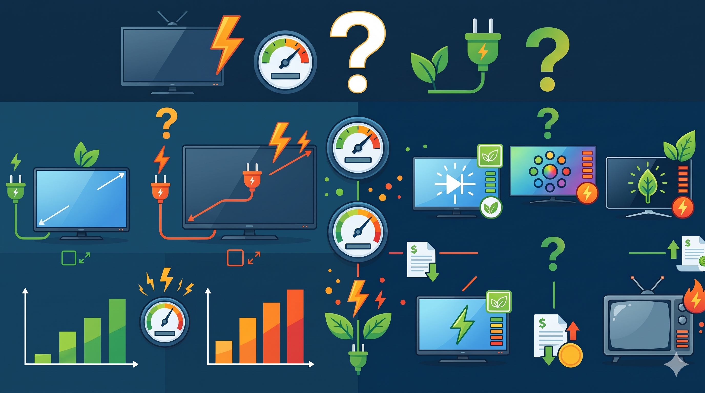

How Much Energy Does Your TV Use?

Televisions are part of everyday life, but their energy consumption can vary depending on their characteristics. Understanding how screen size and screen technology relate to energy consumption can help consumers compare different TVs and make more informed purchasing decisions.
⇒ Explore the data to discover how these factors relate to TV energy use.Does a Bigger TV Use More Energy?

The scatter plot explores the relationship between TV screen size and annual energy consumption.
- The data shows a general trend:
- - larger TVs tend to consume more energy per year.
- - energy consumption also varies between TVs of similar screen sizes
Does Screen Technology Affect Energy Consumption?

The bar chart compares the average annual energy consumption of three TV screen technologies: LCD, LCD (LED), and OLED.
- In this dataset:
-
- OLED TVs
- - There is the highest average energy consumption at 488.70 kWh/year.
- LCD (LED) TVs
- - The average energy consumption at 460.20 kWh/year.
- LCD TVs
- - The lowest average at 332.30 kWh/year.
What Should You Consider When Choosing a TV?
- The data reveals two important patterns in TV energy consumption:
- - Screen size: Larger TVs tend to consume more energy annually, although consumption varies between TVs of similar sizes.
- - Screen technology: In this dataset, LCD TVs have the lowest average annual energy consumption, followed by LCD (LED) and OLED TVs.
Making an Informed Choice
When choosing a TV, consider both screen size and screen technology alongside your viewing needs. Compare the annual energy consumption figures of individual models rather than relying on screen size or technology alone.
The key takeaway: Choosing a TV involves balancing screen size, technology, and energy consumption to find an option that suits your needs.